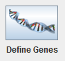

Define Chromosome as the name suggests, allows you to define the settings that will be used for the chromosome, including:
Genes Names
Genes Types
Restrictions
For defining the chromosome you must press first on the button shown in the image:
It will open a Window, where you can configure the chromosome from its genes.